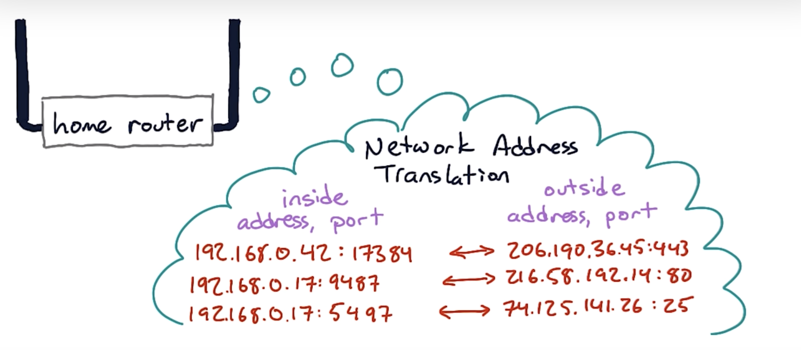
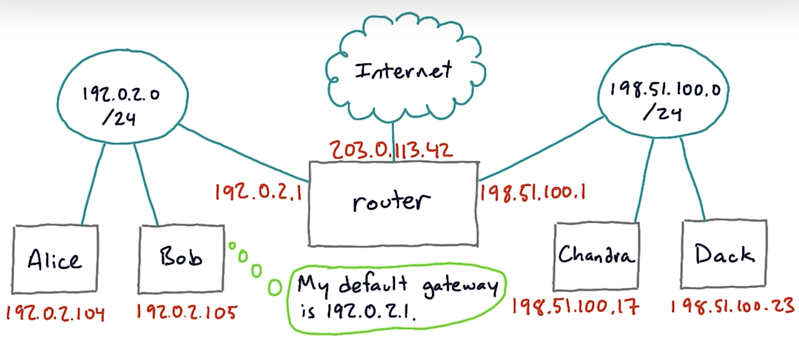
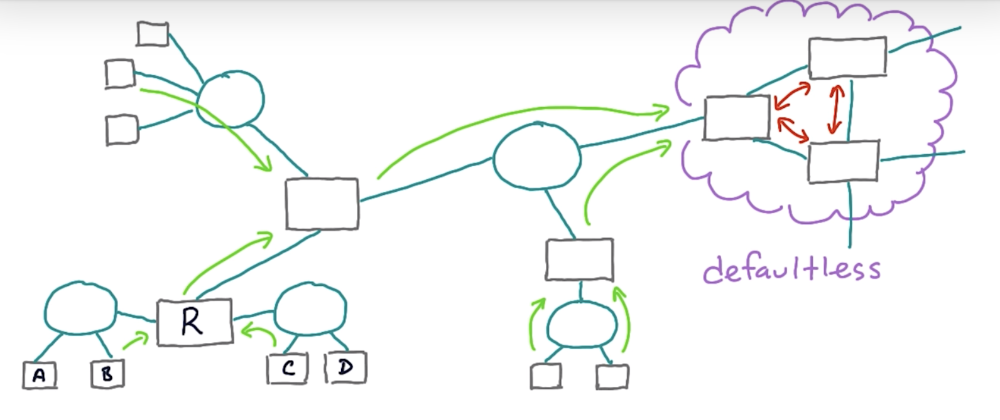

Preface
- http://flashcards.wizardzines.com
- https://jvns.ca/networking-zine.pdf
(jvns’s network zines)
OSI model
Open Systems Interconnection model
OSI model vs. TCP/IP model
| TCP/IP layer | OSI layers | Data | Concepts | Protocols | Where |
|---|---|---|---|---|---|
| Layer 4 Application | 5,6,7 | User data like email, webpage | HTTP, SSH, WebSocket, DNS, TLS, Telnet, DHCP, IMAP, POP, SMTP, BGP | ||
| Layer 3 Transport | 4 | Source & dest port, ACK Checksum—(above) | Ensure successful and reliable delivery. Requires syncing up with recipient. Segments the data. Ports. Sessions. Stream sockets. | TCP, UDP | OS kernel, system libraries |
| Layer 2 Internet | 3 | Source & dest IP addr—(above) | Routing, addressing, subnetting, packets | IP, ICMP | OS kernel, routers |
| Layer 1 Network access/link | 1,2 | Handles physical infrastructure and conversion digital data to signals. | Ethernet, Wi-Fi, MAC | Device drivers |
Cloud

Route 53
Mapping of domain name to AWS resource.
VPC
...
Subnet
A subnet is associated with a VPC.
Internet gateway
An Internet gateway is associated with a VPC.
NAT gateway
A NAT gateway must be associated with a public subnet.
It is used to enable instances in a private subnet to initiate IPv4 outbound traffic to internet or other services.
it only handles the inbound responses from those outbound requests.
Route table
A main route table is created for a VPC by default.
Any subnets created within this VPC can either be associated with either
- the main route table (default), or
- a custom route table
VPC peering
A network connection between two VPCs.
New routes should be added to the VPC's route table to specify which traffic should traverse the peering connection.
Network ACL
A Network ACL is associated with a subnet.
Security group
A security group is associated with a resource / EC2 instance.
ENI
An Elastic Network Interface is associated with an instance. More than one ENIs can be attached to an instance.
Socket
A socket is a software object provided by the OS to allow applications to send and receive data across the network.
man 2 socket
Sockets are an abstraction of the network interface, encompassing Layer 3 (SOCK_RAW) and Layer 4 (SOCK_STREAM and SOCK_DGRAM; TCP and UDP respectively). The system call allows you to:
- Create socket
- Bind socket to an IP address
- Connect socket to an IP address
- Write data to socket — using the routing table
- Read data from socket — using the destination IP address and port number from the data
A socket is not a port.
A port is another software construct defined by the OS to differentiate between different programs or processes running on the same machine.
SOCK_STREAM
A socket of type SOCK_STREAM provides sequenced, reliable, full-duplex byte streams.
This correlated with TCP.
SOCK_DGRAM
A socket of type SOCK_DGRAM supports connectionless, unreliable (typically) small messages.
This correlates with UDP.
SOCK_RAW
SOCK_RAW type sockets don't abstract some of the operations that SOCK_STREAM and SOCK_DGRAM offer like:
- Handling network interfaces
- Handling packet construction
Route table
Maps a destination address to the gateway (i.e. next hop IP address) or host (intended destination), which is tied to a particular network interface.
This is maintained via a routing table:
| Destination | Gateway / Host | Network interface |
|---|---|---|
| 127.0.0.1 | 127.0.0.1 | lo0 |
| (others) | 192.168.1.254 (home router) | en0 |
You can see the routing table using
netstat -rn
Output:
Internet:
Destination Gateway Flags Netif Expire
default 192.168.1.254 UGScg en0
127 127.0.0.1 UCS lo0
127.0.0.1 127.0.0.1 UH lo0
169.254 link#5 UCS en0 !
The headers have the following meaning:
Destination: The destination IP address or network.Defaultis the one that is used when no other route matches the destination IP address.Gateway: The next hop IP address that will be used to reach the destination.link#Xrefers to the indexXof an interface when you runifconfigon macOS.Flags: A set of flags that give more information about the route. For example,Umeans the route is up,Gmeans to use this route as a gateway,Hmeans the destination is a host, etc.Refs: The reference count (how many routes refer to this route).Use: The count of the number of packets sent using this route.Netif: The network interface used for this route.Expire: The time in seconds until the route expires (only used for some types of routes).
Network interfaces
This is a software abstraction of (but not limited to) physical network interfaces.
These interfaces are logical interfaces: they can be linked to either physical hardware interfaces (eg. Wi-Fi, Ethernet card) or software-based interfaces (eg. VPN tunnels, loop interface).
Common types of network interfaces:
| Interface | Use |
|---|---|
en0 | Usually Wi-Fi |
enXXX | Ethernet |
lo0 | Loopback |
p2p0 | Apple's AirDrop |
awdl0 | Apple's AirDrop, SideCar |
llw0 | Apple's Low Data Mode |
gif0, stf0 | Tunnel interfaces |
utunXXX | Interfaces for VPN |
- Hardware-based
- Wi-Fi interface
- Ethernet interface
- Software-based
- Loopback interface — special network interface used by a device to send packets to itself
utun(VPN tunnel) — userspace tunnel; used in VPNs- Virtual Network Interface — used in containerisation software
The tunnel is created in the user space of the OS, instead of the kernel space.
This means the tunnel is managed by user-level process.
You don't typically interact directly with network interfaces. The OS abstracts this away using sockets.
To log all outgoing IP addresses from a specific network interface, do
sudo tcpdump -i en0 -n -tttt
A network interface is like a network configuration:
- IP address
- Subnet mask
- Default gateway
- DNS servers
Configurations are retrieved from a DHCP ssrver.
Network Interface Controller
aka Network Interface Card, Network Adapter, hardware port, hardware interface
This is a hardware component that allows a device to connect to a network. An NIC controls the interaction between hardware and wired/optical/wireless medium.
A host can have multiple NICs.
Every NIC has a physical address called MAC address (Media Access Control) which is a unique serial number.
Here are some common NICs:
- Ethernet card
- Wireless network card
- Mobile network adapter
- USB network adapter
- Fiber Optic NIC
- Guided
- Twisted pair copper wire (carry electrical signals)
- Coaxial cable (carry electrical signals)
- Fiber optics (carry light)
- Multimode. Uses LED; works over 10km.
- Monomode. Uses laser; works over a few km.
- Unguided
- Terrestrial radio channels (radio waves):
- 1-2 meters: Bluetooth
- Up to 100 meters: WiFi
- Up to kilomteres: 3G, 4G, LTE
- Free-space optical communication (light)
- Terrestrial radio channels (radio waves):
Metallic media suffer from electrical noise and interference from nearby electrical sources.
Transmission and reception of raw bit streams over a physical medium. Conversion of signals.
VPN
The idea of a VPN can be extended to Cloudflare's edge.
-
VPN client establishes connection with VPN server
This is made using the existing network interface.
-
VPN client creates a new network interface
The VPN client software will then serve as an intermediary between the newly created virtual network interface and the physical network interface.
Using a separate interface for the VPN allows for more precise control over network traffic and makes the implementation of the VPN features more straightforward.
-
VPN server assigns an IP address to the new network interface
The VPN server acts like a DHCP server.
-
VPN client updates host routing table
-
VPN client updates DNS settings
-
VPN client encrypts data
-
VPN server decrypts data
IPSec
Secure network protocol suite that authenticates and encrypts packets of data.
Workflow:
- Key exchange and Security Association (?) — IKE/IKEv2
- Authentication
- Encryption of IP packet payload
- Encrypt IP header or not
- Decryption
IKEv2
IKEv2 is a protocol to securely establish, negotiate, modify and delete SAs.
OpenVPN
OpenVPN is a protocol for VPNs.
It works by creating a secure connection between two points ("tunnel").
Workflow:
-
TLS handshake
-
Authentication
-
Negotiate session key
-
Tunnelling (encryption & decryption)
The original IP packet is encrypted and becomes the payload of a new IP packet. The header in the new IP packet has the VPN server as its destination.
WireGuard
Split tunnelling
When you partition your traffic into:
- which traffic goes into the VPN tunnel
- which traffic accesses the internet directly
This is done for performance reasons, because not all traffic needs to go through the VPN.
Layer 7 - Application
HTTP
Hypertext Transfer Protocol
HTTP is a client-server application layer protocol.
HTTP/2 and earlier use TCP as its underlying transport protocol so that messages are guaranteed to get delivered in order. A connection must first be made.
Types of HTTP connections
- Non-persistent HTTP connections
- The client initiates a TCP connection with a server.
- The client sends an HTTP request to the server.
- The server retrieves the requested resource from its storage etc. and sends it back to the client.
- THe client receives the resource, say an HTML. If that file has references to more resources, steps 1-4 are repeated for each of those.
- The server closes the TCP connection.
- Persistent HTTP connections Because an HTTP session typically involves multiple non-persistent HTTP connections, the TCP connections which are established and torn down multiple times are inefficient. Persistent HTTP connections are developed such that the duration of the time before the server closes the connection is configurable. Hence, only 1 TCP connection is used to serve multiple requests.
Message format
HTTP methods
- GET
- POST
- HEAD
- DELETE
- PUT
- OPTIONS
- Identify allowed request methods (eg. GET etc.). Response contains an
Allowheader. - Preflighted requests in CORS
- Identify allowed request methods (eg. GET etc.). Response contains an
HTTP headers
Request headers
| Header | What it means | Example |
|---|---|---|
| Host | Domain | example.com |
| User-Agent | Name of HTTP client | |
| Authorization | Field for authentication etc. | |
| Content-Type | MIME type of body | application/json |
| Content-Length | Length of body in bytes | 34 |
| Referer | ??? | http://example.com |
| Accept | MIME type for the response | image/png |
| Connection | Keep TCP connection open | close, keep-alive |
| Cookie | - | user=raimi |
Response headers
| Header | What it means | Example |
|---|---|---|
| Set-Cookie | Set a cookie | user=raimi; HttpOnly |
| Content-Type | MIME type of body | application/json |
| Content-Length | Length of body in bytes | 34 |
| Date | When response was sent | Thu, 29 Jun 2023 15:08:47 GMT |
| Last-Modified | When content was last modified | Thu, 29 Jun 2023 15:08:47 GMT |
| Connection | Keep TCP connection open? | close, keep-alive |
Security headers
| Header | What it means | Example |
|---|---|---|
| Strict-Transport-Security | Load website in HTTPS? | max-age=31536000 includeSubDomains |
| Content-Security-Policy | Load assets? | |
| X-Frame-Options | Can website be framed? | DENY, SAMEORIGIN, ALLOW-FROM https://example.com |
| X-Content-Type-Options | MIME-sniff resource? | nosniff |
| Referrer-Policy | ?? | no-referrer |
- Content-Security-Policy: XSS, data injection
- X-Frame-Options: Clickjacking
- X-Content-Type-Options: XSS
- Referrer-Policy: Privacy
Resources:
Features
HTTP/2: RFC 7540
| Feature | HTTP/3 | HTTP/2 | HTTP/1.1 | HTTP/1.0 |
|---|---|---|---|---|
| Transport protocol | QUIC | TCP | TCP | TCP |
| Format | Binary | Binary | Text | Text |
| Concurreny | ✅ | ✅ | ❌ | ❌ |
| Server push | ✅ | ✅ | ❌ | ❌ |
| Stream prioritisation | ✅ | ✅ | ❌ | ❌ |
| Header compression | ✅ | ✅ | ✅ | ❌ |
| Single TCP connection^ | ✅ | ✅ | ✅ | ❌ |
A binary protocol means that the data becomes more compact (and closer to how the data is represented in memory), hence more efficient parsing.
All communication between a client and a server takes place over a single TCP connection, lasting for the duration of the client's session.
This reduces the overhead of setting up and tearing down connections for each interaction.
- System call overhead
- TCP handshake
- TCP congestion control
- TLS overhead (HTTPS)
Suppose a client has made 2 requests ("streams") to the server over the same TCP connection.
Instead of the server responding to stream 1 fully (all frames), then stream 2 (all frames),
sequenceDiagram
client ->> server: stream 1
client ->> server: stream 2
server ->> client: stream 1 frame 1
server ->> client: stream 1 frame 2
server ->> client: stream 2 frame 1
server ->> client: stream 2 frame 2
server ->> client: stream 2 frame 3
the server can interleave ("multiplex") the frames between different streams.
sequenceDiagram
client ->> server: stream 1
client ->> server: stream 2
server ->> client: stream 1 frame 1
server ->> client: stream 2 frame 1
server ->> client: stream 1 frame 2
server ->> client: stream 2 frame 2
server ->> client: stream 2 frame 3
HTTP tunnel
Encapsulating another protocol's data using HTTP
This involves 3 components:
- Client — Initiates the communication with the encapsulated data in HTTP request
- Proxy server — Decapsulates the data and forwards it to the server
- Server
The HTTP CONNECT method is often used to set up an HTTP tunnel.
A common protocol that is being tunnelled is HTTPS (aka TLS tunnel):
-
Client sends an HTTP CONNECT request to proxy server
-
Proxy server opens a TCP/IP connection to the desired server
At the same time, the proxy server sends an HTTP 200 OK response back to the client
-
Client starts a TLS handshake with the web server
Note that the request is sent through the open connection on the proxy server. The proxy server simply relays the data.
-
Once TLS handshake is complete, the client and the server can securely exchange HTTP requests and responses
HTTP clients automatically uses the HTTP CONNECT method (transparent to user) when it detects that it is connected to a proxy server.
Browser
The browser is an HTTP client.
MIME-sniffing happens (for some web browsers) to determine the content of an asset. Specific to IE and Chrome. With clever naming, a resource can be determined to be an HTML document which has malicious script.
HTTPS
HTTP + TLS

- Browser visits an https website
- Server replies
- Server sends back a cert
- Server key exchange, server gives client public key
-
Browser then verifies: 1. Checks if hostname in cert is same as URL 2. Checks if CA is valid 3. Checks if cert is expired
- Browser and server creating a symmetric key ("session key") that can be used for encrypting future data.
-
-
-
- Browser and server created a symmetric key ("session key") that can be used for encrypting future data.
Resources:
SSH
Secure Shell
SSH is built on top of TCP.
This protocol provides a secure way to access a remote computer via shell. The establishment of a secure communication is part of SSH (Layer 6).
DNS
Domain Name System
DNS is a client-server application layer protocol that translates hostnames on the Internet to IP addresses. DNS is a server and a database.
A hostname is also known as a DNS hostname.
Devices within the network get their DNS server settings from the router either manually or via (DHCP).
The hosts file is a simple text file that maps hostnames to IP addresses. It is checked before DNS is used, so entries in your hosts file will override DNS.
cat /etc/hosts
Get my DNS server
cat /etc/resolv.conf
where nameserver is the local dns server
The computer has a Local resolver library to cache DNS mappings.
or
nslookup <anywebsite>
Query DNS records
nslookup
-type=A/mx <website>
-debug <website>
host -t a/ns/mx <website>
dig @8.8.8.8 jvns.ca @ means querying a 8.8.8.8 DNS server
dig +trace jvns.ca Works like recursive DNS server
time dig @1.1.1.1 twitter.com
time dig @8.8.8.8 twitter.com
Reverse DNS lookup
dig -x 172.17.13.217
Chrome DNS lookup
chrome://net-internals/#dns
"DNS propagation" is a misleading term.
You're not actually waitinf for DNS records to propagate, you're waiting for cached records to expire.
DNS as distributed hierarchical database
The DNS database is distributed
- To avoid single point of failure
- To handle massive amounts of traffic
- To make it closer to certain locations
- To handle different domain hierarchies
Anatomy of domain name
discuss.educative.io
<sub-domain>.<second level domain>.<top-level domain>
Types of DNS servers
- Authoritative nameserver: source of truth
- DNS recursor (eg. 8.8.8.8)
DNS
Point of contact for DNS query
- Local DNS cache (local resolver library)
- DNS recursor (eg. hosted by ISP or 1.1.1.1)
- Root nameservers
- TLD nameservers (.edu server) and sub-domain nameservers (cs.stanford.edu server)
- Authoritative nameservers (stanford.edu server) (last stop)

DNS records / resource records
A DNS record is a list of mappings of hostname to IP address. An entry has the format:
(name, value, type, ttl)
where TTL (time-to-live) specifies how long the entry can be cached by the client. The values of “name”, “value”, and “type” vary from record types.
Record types
A Record (Address Record)
Associates a domain name or subdomain with an IPv4 address (32-bit / 4 bytes / 4 octets).
name host value
------------------------------------
educative.io @ 104.20.7.183
CNAME Record (Canonical Name)
Associates a domain name with an alias of another canonical name.
host value (canonical name)
------------------------------
www educative.io
MX Record
An MX (Mail) record is used to direct email to a specific mail server. Like a CNAME record, MX entries must point to a host name and should not be pointed directly to an IP address.
name=hostname
value=mailserver associated with host
type=MX
NS Record (DNS name server)
What DNS servers have the records for that domain?
name=
value=
type=
ttl=
AAAA Record (“quad-A” record)
IPv6 (8 bytes)
name=
value=
type=
ttl=
DoH
DNS over HTTPS
SFTP
SSH File Transfer Protocol
This protocol provides file transfer, file access and file management functionalities over any reliable data stream.
SFTP typically uses SSH (Layer 6) to secure the data stream.
Note that SFTP uses the part on secure communication provided by SSH (Layer 6). It doesn't use the remote shell access capabilities of SSH.
WebSocket
ws://
WebSocket is built on top of TCP.
A WebSocket connection is a full-duplex connection.
The connection is established by upgrading an existing HTTP or HTTPS connection. As such it uses port 80 or 443.
Upgrading an HTTP connection might look like this:
HTTP/1.1 101 Switching Protocols
Upgrade: websocket
Connection: Upgrade
A WebSocket connection is preferred when we need a persistent bi-directional low latency data flow from the client to the server and back.
Chat apps, real-time social streams, browser-based multiplayer games.
WebSocket Secure
WebSocket that is secured with TLS is typically referred to as WebSocket Secure.
Commonly used with wss://.
Telnet
Protocol to estable virtual terminal connection to remote host. Note that Telnet can be used to connect to any port on a remote host.
Telnet runs on top of TCP.
Type
telnet example.com 80
and
GET / HTTP/1.1
Host: www.example.com
BGP
Border Gateway Protocol
When a router receives a packet, it uses a protocol called BGP to decide what router the packet should go to next.
DHCP
Dynamic Host Configuration Protocol
A DHCP server provides the network configurations to its client:
- IP address
- Subnet mask
- Default gateway
- DNS servers
port: 67
POP, IMAP
Post Office Protocol v3, Internet Message Access Protocol
POP/IMAP protocols are pull protocols used for getting email from an email server.
These protocols use TLS for security.
POP
POP phases
- User agent connects to POP server on TCP on port 110.
- User agent authenticates.
- User retrieves emails and mark emails for deletion.
- Close the POP3 session. Server makes updates based on users command. Deletes email accordingly. Only inbox.
Emails might not be in sync on multiple devices.
IMAP
(More complex)
- Emails are kept on the server and not deleted.
- All folders are synced.
- Inbox will be in sync on all devices.
SMTP
Simple Mail Transfer Protocol (Sending Mail To People)
SMTP is a push protocol, used to send email out to the SMTP server whenever it needs to. SMTP uses TCP, which means that transfers are reliable. Connection is established at port 25.
-
Email is sent to sender’s SMTP server.
-
Email is now placed on a message queue in the sending SMTP server.
-
Sender’s SMTP initiates a connection with the recipient’s SMTP server an will conduct an initial SMTP handshake.
-
Sender’s SMTP the email to recipient’s SMTP server.
sends
-
Using a pull protocol, email is then downloaded from the recipient’s SMTP server.

Format
Note: All SMTP email messages are in 7-bit ASCII
Delivered-To: user@gmail.com
Date: Thu, 16 May 2019 03:36:28 +0000 (UTC)
From: Fahim from Educative <fahim+newsletter@educative.io>
Mime-Version: 1.0
Reply-to: fahim@educative.io
Subject: Data analysis with R
To: user@gmail.com
Content-Transfer-Encoding: quoted-printable
Content-Type: text/plain; charset=UTF-8
Mime-Version: 1.0
Hey User,
Regards,
Raimi
Tor
The Onion Router
iCloud Private Relay
TLS
Transport Layer Security
Previously known as SSL (Secure Sockets Layer)
TLS typically operates on top of TCP.
This protocol provides
- Privacy — data is encrypted
- Data integrity — verifying data is not tampered with before reaching its intended recipient
- (Server) authentication — make sure when the client connects to the server, the server is indeed who it is
While server authentication is the most common, the client can also be additionally requested for authentication. This is known as mTLS or mutual TLS.
References:
- https://tls13.xargs.org/ (Visualisation)
Setup: Trust chain
For this protocol to work, we rely on the trust infrastructure of the web.
The trust infrastructure is made up CAs (certificate authorities) and SSL certificates.
A (root) CA generates a certificate for itself, and certificates for servers and other CAs ("intermediary CAs").
A CA can in turn generate certificates for other servers and other CAs and so on.
If a client needs to verify a server's certificate, it can check the chain of trust up to the root. If the chain leads back to a root that the client trusts, it can trust the server's certificate.
It is easier for a client to manage a list of root certificates, rather than managing individual CA certs.
Operating systems and browsers come with a list of trusted root certificates ("trust store").
In macOS, the Keychain Access app lets you see the root certificates that macOS trusts by default under System Roots.
Some applications (eg. Java, IntelliJ) have their own trust store independent of the OS. For example, in Java, the trust store is typically found in a file name cacerts in the Java installation directory.
The documentation for Install the Cloudflare certificate has a good overview to install the root certificate for OSes (macOS, iOS) and applications (Python, JetBrains).
Certificate verification
How does the client verify a certificate?
- hostname matching (against the requested URL)
- certificate validity
- CA issuer
- the client validates the:
- certificate signature — use the public key of the issuing CA to verify that the certificate has not been tampered with
- certificate chain — if the issuing CA is an intermediate CA, get the intermediate CA's certificate and repeat the steps above. if it's a root CA, verify against the OS trust store.
The server typically sends its own certificate and the intermediate CA's certificates as well.
In OpenSSL, use the -showcerts option.
openssl s_client -showcerts -servername jvns.ca -connect jvns.ca:443 2>/dev/null
In a Chrome browser, you can see the chain when you click the padlock.
Setup: Client-server
For this protocol to work,
- the server must have an SSL certificate
- the client must have a the corresponding root CA's certificate
There are also 3 entities at play:
- the server
- the client
- the CA
1. The server must have an SSL certificate
This is an X.509 certificate.
- the server hostname(s)
- a public key
- an expiration date
- signature(s) from a CA (signed with their private key)
This certificate is issued out-of-band by a CA.
There are two ways to obtain an SSL certificate:
- via CSR -- manual way
- via ACME (Automatic Certificate Management Environment) -- a modern, automated way
To request for an SSL certificate from a CA, the owner of the server needs to submit a Certificate Signing Request (CSR) to the CA. The workflow is as such:
- The server generates a key pair.
- Generate a CSR using the private key. A CSR requests information like:
- the server hostname
- public key (gotten from private key)
- company details
- country
- Submit the CSR to the CA.
- The CA validates the domain ownership (via DCV etc.).
Once validated, the CA will issue the SSL certificate to the owner of the server (via email etc.).
2. The client must have the corresponding root CA's certificate
The client needs to trust the CA that issued the server's certificate.
To do that, the client needs to have the corresponding CA certificate or the root CA (usually this).
TLS cipher suite
A cipher suite specifies the methods and algorithms that a TLS client and server will use to securely communicate.
TLS_<1>_WITH_<2>_<3>_<4>
where
<1>— Key exchange algorithm eg.RSA,DHE,ECDHE<2>— Authentication algorithm eg.RSA,ECDSA<3>— Encryption eg.AES_128_GCM<4>— MAC algorithm eg.SHA256
eg.
TLS_ECDHE_RSA_WITH_AES_128_GCM_SHA256
TLS 1.3 uses the following format (specifying only the symmetric cipher and hash function):
TLS_<3>_<4>
eg.
TLS_AES_128_GCM_SHA256
SSL proxying
SSL proxying is a mechanism that allows a proxy server to intercept and decrypt TLS traffic, then re-encrypting the data to forward it to the intended recipient.
In SSL proxying, there are 3 components:
- client
- SSL proxy
- remote server
and 2 SSL certificates:
- SSL proxy's certificate
- remote server's certificate
The client will be presented with the SSL proxy's certificate, so it must be installed and trusted on the client machine.
SSL pinning
aka certificate pinning
SSL pinning works by preloading the server's certificate in tbe client's application.
This is a security measure to prevent MITM attacks by associating a host with its expected SSL certificate.
SSH
SSH typically operates on top of TCP.
Here, SSH is used for client authentication and establishing a secure connection.
When you clone a repository from GitHub using SSH, you're using the SSH protocol to authenticate and establish a secure connection (instead of accessing a remote shell).
The communication between your computer and GitHub is encrypted, ensuring that your data is transferred securely.
Setup
For this protocol to work, 3 asymmetric key pairs are at play:
1. Server's host key pair (permanent)
The private key, held by the server, is used to identify the server, typically stored in /etc/ssh.
These keys should be automatically created when installing SSH on the server (?), so no generation is required.
There are n pairs of server host keys, where n is the no. of asymmetric cryptography used.
This can be RSA, ECDSA, ED25519 etc.
The public key is shared with the client during the initial connection. The client then stores this key typically in ~/.ssh/known_hosts.
The server should ideally share this public key with the clients out-of-band prior to any SSH connections.
Otherwise, the client is left to blindly trust the server on first connection.
2. Client's key pair (permanent)
The private key, held by the client, is used for authenticating with the server.
The public key, should be shared with the server out-of-band prior to any SSH connection. This is typically stored in ~/.ssh/authorized_keys at the server.
3. Ephemeral key pair
The client and the server each will have to generate a key pair for every SSH session.
They are used to establish the session's shared secret using a key exchange algorithm.
User configurations are typically stored at ~/.ssh/config:
Host examplehostname
HostName example.com
IdentityFile ~/.ssh/example_private_key
User raimi
Port 11566
System configurations are typically stored at /etc/ssh/ssh_config.
More information can be found in
man ssh_config
Workflow
After TCP handshake, this is what happens:
-
Server sends its public host key (initial connection only)
If the client has never connected to this server before, it uses the "trust on first use" model and asks the user to confirm the server's key fingerprint. If the client has connected to this server before, it checks the server's public key against the one it has saved from previous connections.
-
Set up session key (shared secret)
A key exchange algorithm is used to set up a shared secret. The server creates a key pair and sends the client the public key (in this session itself). See key exchange algorithm for more.
Both the client and the server will then have the same shared secret.
This secret will be used as a key for symmetric encryption for the remainder of the session to encrypt the communication.
-
Client authentication
This makes use of the key pair that was previously set up out-of-band.
In this authentication, the client must prove that it can decrypt the message that the server encrypted.
- The server uses the public key to encrypt some message.
- The client calculates a hash which is a function of the decrypted message and other metadata, then sends to server.
- Server compares with its own calculation of hash (which should be the same).
Apart from asymmetric key pair, other authentication methods include:
- Password — the password is encrypted using the shared secret key
- SSH certificates
Layer 4 - Transport
What problems are we trying to solve?
- Network is unreliable due to congestion — when more packets than the network has bandwidth for are sent through, some packets get dropped ("lost packets") and some get delayed ("out-of-order").
- Not all packets go through the same route. Some packets might arrive earlier ("out-of-order").
- Packets might get altered along the way ("corrupted data")
Therefore, the goals of Layer 4 (not guaranteed by all protocols) are:
-
Provide reliable delivery of packets
- No lost packets
- In-order delivery
- No corrupted data
-
Control rate of data transmission to prevent congestion
-
Multiplexing and demultiplexing
Transport layer labels packets with the port number of the application a message is from and the one it is addressed to. This allows the layer to multiplex and demultiplex the data. TCP and UDP implement these differently.
Overview
| QUIC | TCP | UDP | |
|---|---|---|---|
| Stateful connection | Connection ID | (IP address, port) | Connectionless |
| RTT | 0 | 1 | 0 |
| With TLS? | ✅ | ❌ | ❌ |
| Loss recovery mechanism | ✅ | ✅ | ❌ |
| Corrupted data mechanism | ✅; No retransmit | ✅; Retransmit | ❌ |
| Data integrity check | ✅ | ✅ | ✅ |
TCP
Transport Control Protocol
TCP is a connection-oriented protocol. It is full-duplex (both hosts on a TCP connection can send messages to each other simultaneously).
Reliable delivery
| Goal | Solution |
|---|---|
| In-order delivery | Use sequence numbers |
| No corrupted packets | Use checksum. Discard if invalid. |
| No lost packets segments | Use retransmission timer.^ |
^TCP sends an acknowledgement for almost every segment

Congestion control
- Bandwidth allocation — Bandwidth is allocated per connection. A host can open multiple connections. Bandwidth cannot be divided and allocated equally among end-systems because real traffic is transmitted in bursts and not in one continuous stream.
- Fairness — Increasing the transmission rate. Of one end-system necessarily decreases another.
- Convergence — Bandwidth should be allocated such that no one host hogs all of it. Congestion fixes:
Congestion fixes:
- Send packets at a slower rate in response to congestion
- Track changes in traffic
3-way handshake
sequenceDiagram
client ->> server: SYN, SequenceNum = x, Acknowledgement = -
server ->> client: SYN+ACK, SequenceNum = y, Acknowledgement = x+1
client ->> server: ACK, SequenceNum = -, Acknowledgement = y+1
Message format
A TCP packet consists of:
- Ethernet or wifi header
- IP header
- TCP header
- Source port number
- Destination port number
- Sequence number
- Acknowledgement number
- Header length
- …
- Flag (synchronise, finish, push, reset, acknowledge, urgent)
- Window size
- Checksum
- Urgent pointer
- …
- Data (payload)
Inspect
Capture packets
tcpdump [tcp|udp] # socket type
-i [en0|lo0] # network interface
-X # print hex and ASCII
host # hostname
port 3000 # port number (of destination?)
-c 10 # capture 10 packets
UDP
User Datagram Protocol
UDP is a connectionless protocol.
How it works
- UDP does not involve any initial handshaking.
- Message may not get delivered.
- Message may have some changes.
- Message may be delivered in the wrong order.
- Checks for corrupted message but does not correct them.
Multiplexing and demultiplexing
UDP message
Consists of:
- Source port number
- Destination port number
- Length of datagram (max 2^16)
- Checksum
- Data
QUIC
Quick UDP Internet Connections
QUIC includes TLS encryption by default.
SSH tunnel
aka SSH port forwarding
-
Creating a tunnel
SSH client establishes an SSH connection with an SSH server. This is generally made over port 22.
-
Port forwarding
The SSH tunnel is used to forward connections from a specified local (TCP) port to a specified remote (TCP) port (or vice versa).
There are two types of port forwarding:
- Local
- Remote

https://robotmoon.com/ssh-tunnels/
Layer 3 - Network (Internet)
IP: “You're not supposed to be here!”
Responsibilities:
- Host addressing
- Message forwarding: Since many networks are partitioned into subnetworks and connect to other networks for wide-area communications, networks use specialised hosts, called gateways or routers, to forward packets between networks.
IP
Internet Protocol
Provides an addressing system that allows devices on the network to be identified.
Routing
Messages are routed via the route table.
Routing protocols
- Static: manually compute routes
- Dynamic
NAT
Network Address Translation
A NAT allows all of the hosts of a router share one or a few public IPv4 addresses (usually between private and public). This is to deal with shortage of IPv4 addresses. What it does is to modify the IP addresses in the IP header.

Router is a device that connects two different IP networks.


IP packet
packets
The unit of information in the network layer
Datagram
A basic transfer unit
- Header
- Version
- Length
- Source address
- Destination address
- Protocol
- Checksum
- Flags
- TTL
- Payload
Host addressing
An IP address is mapped to a network interface in the host.
32-bit numbers written as 4 octets (decimals), separated by . Eg. 1.2.3.4.
To identify each device in the world-wide web, Internet Assigned Numbers Authority (IANA) assigns IPV4 address as a unique identifier for each device on the Internet. Length of the IP address is 32 bits. Hence there are
Address classes
| Class | Length of subnet ID | Range | Default subnet mask | Remarks |
|---|---|---|---|---|
| Class A | 1 octet | 0.0.0.0 to 127.255.255.255 | 255.0.0.0 | |
| Class B | 2 octets | 128.0.0.0 to 191.255.255.255 | 255.255.0.0 | |
| Class C | 3 Octets | 192.0.0.0 to 223.255.255.255 | 255.255.255.0 | |
| Class D | For multicast | |||
| Class E | Reserved |
Subnetting
- Subnetting based on octets (deprecated).
- Variable-length subnetting.
| Subnet | No. of possible addresses | Lowest address | Highest address |
|---|---|---|---|
| 10.0.0.0/30 | 2^2 | 10.0.0.0 | 10.0.0.3 |
| 192.0.2.0/24 | 2^8 | 192.0.2.0 | 192.0.2.255 |
Address assignment using subnetting
- Subnet mask: host bits set to 0 eg. 203.128.22.0 and a host can be 203.128.22.7
- Network address: host bits set to 0 eg. 203.128.22.0.
- Broadcast address: host bits set to 255 (all binary 1’s) eg. 203.128.22.255
- Host address: host bits eg. 203.128.22.18
Special addresses
Self-identification
0.0.0.0/8
Loopback address
127.0.0.1/8
Each IPv4 host has a loopback interface that is not attached to a data link layer. This allows processes running on a host to use TCP/IP to contact other processes running on the same host. This is very useful for testing purposes.
Private addresses
10.0.0.0/8, 172.16.0.0/12, 192.168.0.0/16
Private networks that are not directly attached to the Internet.
Link-local address
169.254.0.0/16
Fragmentation and reassembly
IPv4 packets need to be fragmented depending on the data link layer’s maximum transmission capability. They can be as big as 64KB.

ICMP
Internet Control Message Protocol
For diagnostics
- Used by
- ping
- traceroute
Messages
- Destination unreachable
- Network unreachable
- Host unreachable
- Protocol unreachable
- Port unreachable
- Fragmentation needed
- Redirect
- Time exceeded
- Echo request and echo reply
- …
Layer 1/2 - Physical/Datalink
Responsibilities
Receive packet from network layer and deals with providing hop-to-hop communication between entities directly connected by a physical link.
- MAC layer Responsible for controlling how devices in a network gain access to a medium and permission to transmit data
- Logical link control layer
ARP
Address Resolution Protocol
ARP maps an end host's IP address to a MAC address.
Hosts maintain a table of these mappings, called an ARP cache.
| MAC address | IP address |
|---|---|
| 5f:44:11 | 192.20.1.1 |
If the host doesn't know a MAC address for a certain IP address, it sends out an ARP request packet, asking other machines for the matching MAC address. The result is then updated in the host's ARP cache.
Access networks
Networks that physically connect end systems (laptop, mobile phones) to the first router.
- Physical
- DSL modem (Digital Subscriber Line)
- Using telephony infrastructure thru telephone wires
- Dial-up
- Using telephony infrastructure thru telephone wires
- Cable internet
- Using cable TV infrastructure thru coaxial cable
- FTTH (Fiber to the home)
- Using optic fibres
- DSL modem (Digital Subscriber Line)
- Remote
- Satellite
- WiFi
Router
A network device that can (i) bridge between different networks together, (ii) assign IP addresses using a protocol called DHCP, and (iii) determine what traffic can pass between them (most routers have a built-in Firewall).
Standards
- MIME type
Type a URL on the browser
https://twitter.com/manekinekko/status/1281704000572858375
Troubleshooting
Quicks
netstat see open ports
Transport layer
sudo lsof list files and processes
-i list only network sockets
-i:8080 at port 8080
-t show only process ID
-P show port


Capture packets that are to or from my computer
sudo tcpdump -p
sudo tcpdump [...] [and|or] [...]
[src|dest|tcp] port <port-no>
host <IP-addr>
Make TCP connections: chat server
{
nc -l 3456
}
{
nc localhost 3456
}
Make tcp connections: file server
{
nc -l 4444 > myfile.txt
}
{
echo "hiiii" > thefile.txt
nc localhost 4444 < thefile.txt
}
Netcat
nc
en.wikipedia.org 80 other args
localhost 3456 client
-l 3456 listen on port 3456
-l 3456 | /bin/bash listen on port 3456
-z localhost 3456-3457 port scanning from 3456 to 3457
-lU /var/tmp/dsocket create a listening stream socket
-U /var/tmp/dsocket connect to an existing stream socket
-v verbose
Network layer
ICMP: echo request & reply
ping 8.8.8.8 send and receive network traffic with this address (‘ping server’)
-c3 send 3 packets then stop

(TTL=no.of hops before being discarded)
Sending ICMP messages
traceroute [address] list hops between host and other host
-m max TTL
nmap -sP 192.168.1.0/24
netstat -pant | grep LISTEN
curl https://ipvigilante.com/133.237.7.85 | jq
nc google.com 80
See what steps your packet takes to get somewhere
traceroute google.com